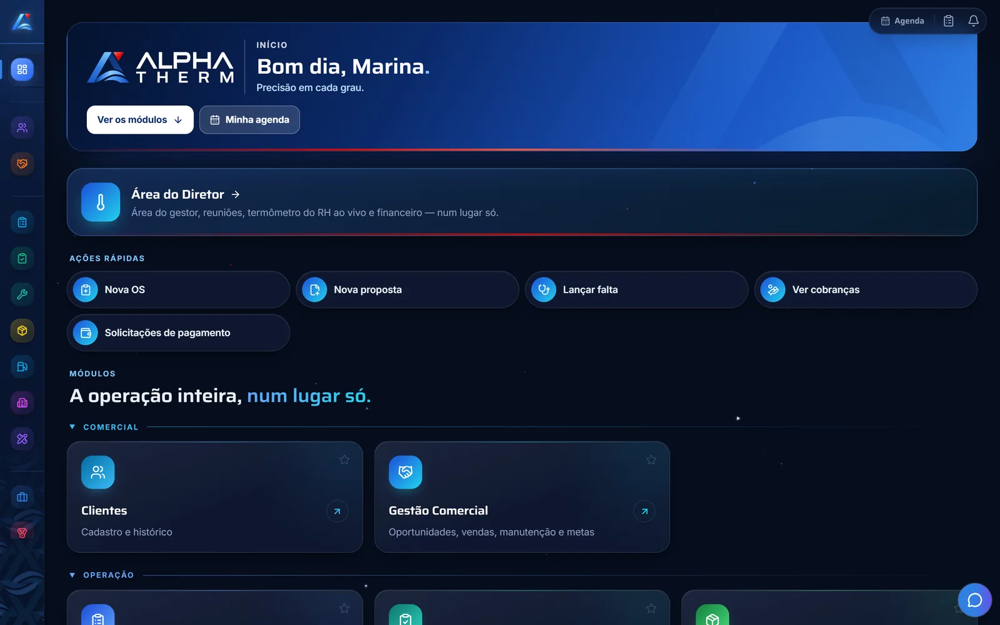
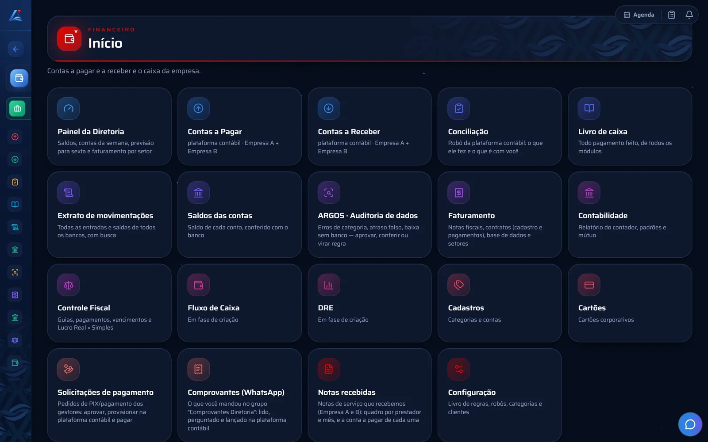
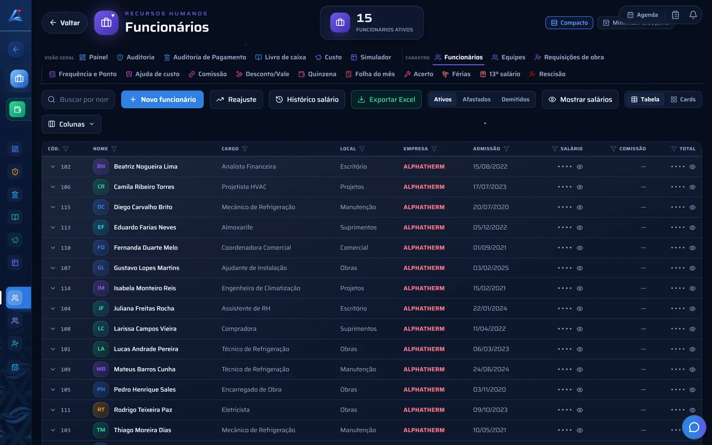
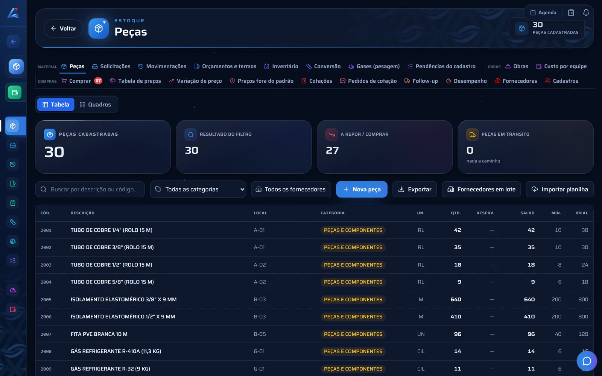

Alphatherm ERP
One system that replaced spreadsheets and disconnected tools across a group of three companies, used every day by finance, HR, sales, field teams and the board.
Um único sistema que substituiu planilhas e ferramentas soltas num grupo de três empresas, usado todo dia por financeiro, RH, comercial, equipes de campo e diretoria.

business modules
módulos de negócio
commits in under 6 months
commits em menos de 6 meses
database tables
tabelas no banco
automated tests
testes automatizados
A growing company running on spreadsheets.
Uma empresa crescendo em cima de planilhas.
Payroll was checked by hand against the accountant's numbers. Payments were reconciled line by line from bank statements. Inventory, purchasing, sales proposals and construction projects each lived in a different spreadsheet or tool, and nobody had one picture of the business.
A folha era conferida à mão contra os números do contador. Os pagamentos eram conciliados linha a linha a partir dos extratos. Estoque, compras, propostas e obras viviam cada um numa planilha ou ferramenta diferente, e ninguém tinha uma visão única da empresa.
Errors here cost real money: a wrong payroll line is a person paid the wrong amount. The system had to be correct, auditable and safe, and it had to be adopted by people who were used to Excel.
Erro aqui custa dinheiro de verdade: uma linha errada na folha é uma pessoa recebendo o valor errado. O sistema precisava ser correto, auditável e seguro, e ser adotado por gente acostumada com Excel.
15+ modules, one database, one login.
15+ módulos, um banco, um login.
Finance & billing
Financeiro e faturamento
Payables and receivables, a "pay today" alarm, bank reconciliation with learned rules, recurring contracts and automatic invoice delivery.
Contas a pagar e receber, alarme de "pagar hoje", conciliação bancária com regras aprendidas, contratos recorrentes e envio automático de notas.
HR & payroll
RH e folha
Payroll with current tax tables, vacations, severance, overtime and hour bank, plus a payment audit that reads statements from several banks.
Folha com tabelas fiscais vigentes, férias, rescisão, horas extras e banco de horas, mais auditoria de pagamentos lendo extratos de vários bancos.
Sales & quoting
Comercial e orçamentos
CRM pipeline with goals, partner commissions, Word proposals and quoting engines for HVAC and ductwork projects.
Funil de CRM com metas, comissões de parceiros, propostas em Word e motores de orçamento para climatização e dutos.
Projects & construction
Obras
Gantt with baseline and S-curve, a 10-week staffing planner, daily site reports with photos and project results (sold vs. spent).
Gantt com linha de base e curva S, planejador de equipes de 10 semanas, diário de obra com fotos e resultado da obra (vendido x gasto).
Inventory & purchasing
Estoque e compras
Stock that can never go negative (enforced in the DB), weighted average cost, invoice XML receipt, landed cost and supplier performance.
Estoque que nunca fica negativo (garantido no banco), custo médio ponderado, entrada por XML da nota, custo real e desempenho de fornecedores.
Field service & maintenance
Campo e manutenção
The offline field app as a module, maintenance contracts with preventive schedules, and QR-code service requests without login.
O app de campo offline como módulo, contratos de manutenção com preventivas e chamados por QR code sem login.
Also: tax control, accounting reports, occupational health, PPE, fleet, meetings with live captions, a demands desk and an executive portal.
Também: controle fiscal, relatórios contábeis, saúde ocupacional, EPIs, frota, reuniões com legenda ao vivo, central de demandas e portal da diretoria.
Built for people who live in Excel.
Feito para quem vive no Excel.
Every table has Excel-style filters, every money field behaves like a spreadsheet, and everything updates live when a colleague changes something.
Toda tabela tem filtro estilo Excel, todo campo de dinheiro se comporta como planilha, e tudo atualiza ao vivo quando um colega muda algo.



Security lives in the database.
A segurança mora no banco.
The browser talks straight to PostgreSQL through Supabase, so every rule is enforced by the database itself, not by the UI.
O navegador fala direto com o PostgreSQL pelo Supabase, então toda regra é garantida pelo próprio banco, não pela interface.
The hard parts.
As partes difíceis.
🔐 Access control that can't be forgotten
🔐 Controle de acesso que não dá para esquecer
Roles have default modules and each user can get extra ones. The database enforces the same model with RLS helper functions, so field roles can see a construction project but never its money columns. A DDL event trigger adds the right policy to every new table automatically.
Cargos têm módulos padrão e cada usuário pode ganhar extras. O banco garante o mesmo modelo com funções de RLS, então quem é de campo vê a obra mas nunca as colunas de dinheiro. Um event trigger de DDL coloca a política certa em toda tabela nova sozinho.
🧪 Database tests without a server
🧪 Testes de banco sem servidor
270+ tests load the real migrations into an in-process Postgres (PGlite) with an auth emulation and check RLS, RPCs and triggers. Together with ~8,700 front-end tests, they run before every push.
270+ testes carregam as migrations reais num Postgres embutido (PGlite) com emulação de autenticação e conferem RLS, RPCs e triggers. Junto com ~8.700 testes de front-end, rodam antes de cada push.
🏦 Reconciliation and payment audit
🏦 Conciliação e auditoria de pagamentos
Parsers for statements from several Brazilian banks (PDF, OFX and photo with OCR), a name-plus-amount matching engine, learned rules, duplicate-payment alerts and a sync queue to the accounting platform with one single write path.
Leitores de extrato de vários bancos (PDF, OFX e foto com OCR), motor de cruzamento por nome e valor, regras aprendidas, alerta de pagamento duplicado e fila de sincronização com a plataforma contábil por um único caminho de escrita.
🤖 Document AI with guardrails
🤖 IA de documentos com limites
OCR and PDF extraction run in the browser, then an LLM turns the text into structured data: invoices, statements, card bills, fuel receipts. Agents use tools under the caller's own permissions, with spend caps, an audit log and human approval for real actions.
OCR e leitura de PDF rodam no navegador, e um LLM transforma o texto em dados: notas, extratos, faturas de cartão, cupons de combustível. Os agentes usam ferramentas com as permissões de quem pediu, com teto de gasto, log de auditoria e aprovação humana para ações reais.
⚡ Realtime everywhere
⚡ Tempo real em tudo
One reusable live-update engine across all modules, so two people never work on stale data. Open tabs also detect a new deploy and reload themselves.
Um motor de atualização ao vivo reaproveitado em todos os módulos, para ninguém trabalhar com dado velho. As abas abertas também detectam um deploy novo e se recarregam sozinhas.
🧮 Domain engines
🧮 Motores de domínio
Payroll with current tax tables, HVAC quoting calibrated on real projects, a Gantt with critical path and S-curve, a staffing capacity planner and an inventory with landed cost.
Folha com tabelas fiscais vigentes, orçamento de climatização calibrado com obras reais, Gantt com caminho crítico e curva S, planejador de capacidade de equipes e estoque com custo real.
The source code belongs to the company and is private.
O código pertence à empresa e é privado.